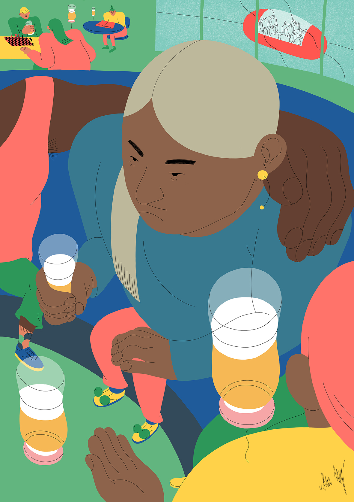
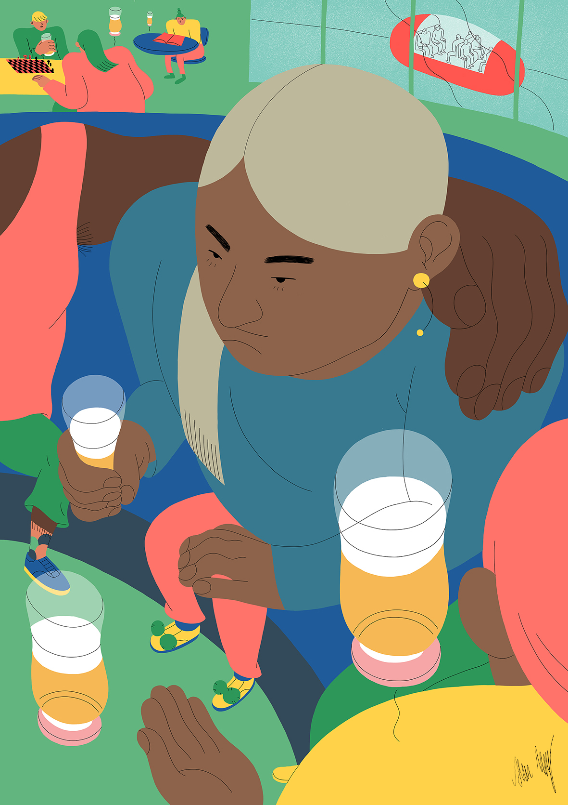

Alva Skog
Future Identities
These three illustrations are exhibited at Central Saint Martins Degree Show 2018 as part of my final course work.
They are called ‘Future Identities’ and investigates what identity positions could look like in the future. What kind of gender identities will exist in the future? Will there be genders? Inspired by feminist science fiction such as Woman on the edge of time by Marge Piercy, I have illustrated these identities in a fictional future. Featured on DigitalArts
 
